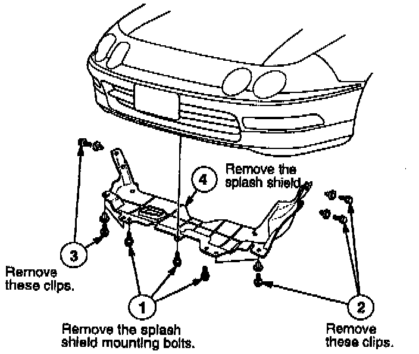
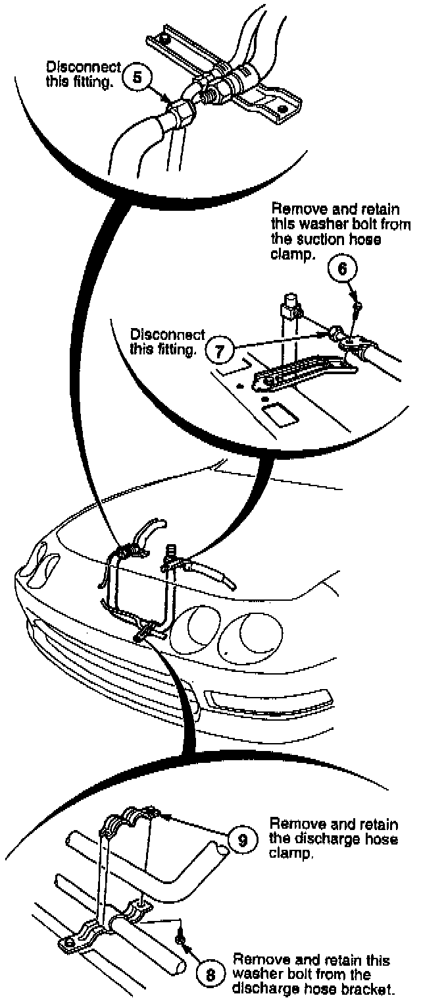
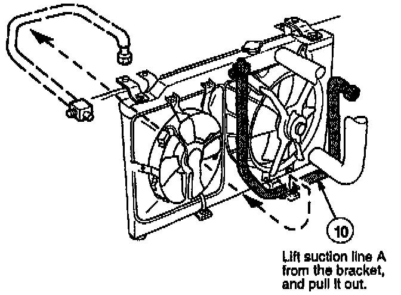
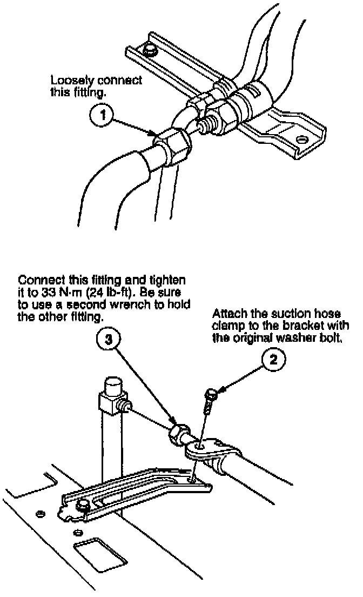
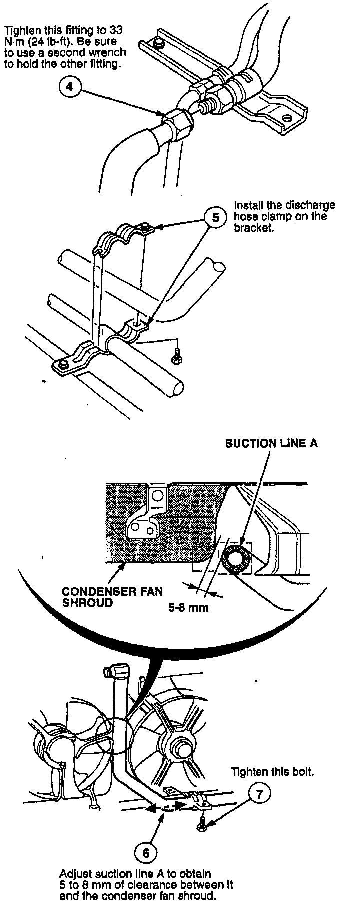
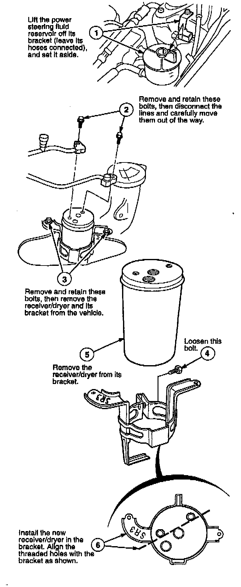
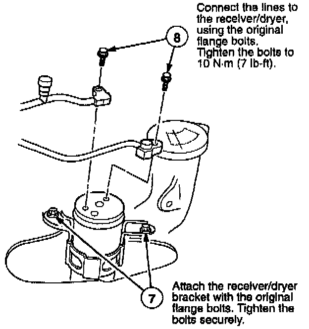
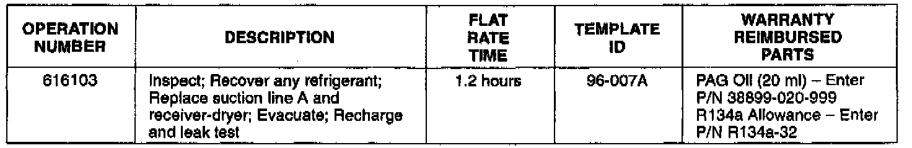

Air Conditioning - Inoperative
March 12, 1996BULLETIN NO.
96-007
YEAR
1994-96
MODEL
INTEGRA
VIN APPLICATION
See VEHICLES AFFECTED
Air Conditioning Inoperative
SYMPTOM
The A/C is inoperative. (The initial inspection reveals a loss of refrigerant.)
PROBABLE CAUSE
A hole is rubbed in suction line A by contact with the condenser fan shroud.
VEHICLES AFFECTED
All Integras with A/C:
3-DOORS
1994-95: All
1996:
LS - Thru VIN JH4DC4.. .T8007796
SR - Thru VIN JH4DC2...TS001877
RS - All with dealer installed A/C
4-DOORS
1994-95: ALL
1996:
LS - Thru VIN JH4DB7...TS002253
GSR - Thru VIN JH4DB8...TS00470
RS - All with dealer installed A/C
CORRECTIVE ACTION


Replace suction line A and the receiver/dryer with the parts listed under PARTS INFORMATION.
1. Recover any remaining refrigerant in the System, and inspect suction line A for a rubbed-through hole.


2. Remove suction line A.

3. Install the new suction line A (see PARTS INFORMATION).


4. Replace the receiver/dryer.
5. Reinstall the power steering fluid reservoir onto its bracket.
6. Evacuate the A/C system using a refrigerant Recovery/Recycling/Charging Station. Follow the equipment manufacturer's instructions.
7. Charge the A/C system with 650 to 700 grams (23 to 25 oz.) of HFC-134a refrigerant, and add 20 ml (20 cc, 1/3 fl.oz) of ND-8 refrigerant oil. Do not overcharge the system!
8. Check for leaks using a leak detector designed for HFC-134a refrigerant.
NOTE:
Because HFC-134a refrigerant is heavier than air, always check for leaks 360 degrees around all fittings.
PARTS INFORMATION
Suction Line A: P/N 80321-ST7-A01
Receiver/Dryer: P/N 80351-ST7-A11
ND Refrigerant
PAG Oil (120 ml): P/N 38897-PR7-A07AH
NOTE:
Use this number to order the oil, but do not use it in the warranty claim.

WARRANTY CLAIM INFORMATION
In warranty:
The normal warranty applies.
Out of warranty:
Any repair performed after warranty expiration may be eligible for goodwill consideration by the District Technical Manager or your Zone Office. You must request consideration, and get a decision, before starting work.
Failed P/N: 80321-ST7-A01
Defect code: 060
Contention code: B06